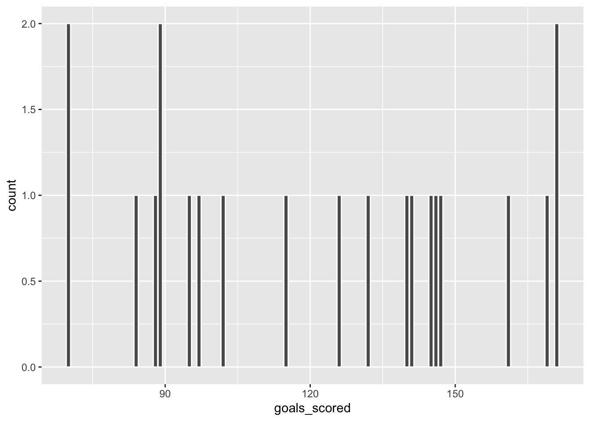

8 Lesson 6 - Wrangling Verbs
- Explore the following wrangling verbs:
select,mutate,filter,arrange,summarize,group_by - Use the native pipe operator
|>
For more information about the topics covered in this chapter, refer to the resources below:
- Intro to dplyr (YouTube) by Lisa Lendway
- Demonstration of dplyr (YouTube) by Lisa Lendway
- Data Transformation (html) by Wickham, Çetinkaya-Rundel, & Grolemund
- A Grammar for Data Wrangling (html) by Baumer, Kaplan, and Horton
8.1 Data Wrangling Motivation
Recall the elections data by U.S. county:
We’ve used data viz to explore some general patterns in the election outcomes. For example, a map!
# Get a background map
library(socviz)
data(county_map)
# Make a choropleth map
library(RColorBrewer) # For the color scale
library(ggthemes) # For theme_map
elections |>
mutate(county_fips = as.character(county_fips)) |>
mutate(county_fips =
ifelse(nchar(county_fips) == 4, paste0("0", county_fips), county_fips)) |>
ggplot(aes(map_id = county_fips, fill = cut(repub_pct_20, breaks = seq(0, 100, by = 10)))) +
geom_map(map = county_map) +
scale_fill_manual(values = rev(brewer.pal(10, "RdBu")), name = "% Republican") +
expand_limits(x = county_map$long, y = county_map$lat) +
theme_map() +
theme(legend.position = "right") +
coord_equal()
Consider some fairly basic follow-up questions, each of which we cannot answer precisely (or sometimes even at all) using our data viz tools:
- How many total people voted for the Democratic and Republican candidates in 2020?
- What about in each state?
- In just the state of Minnesota:
- Which counties had the highest and lowest Democratic vote in 2020?
- How did the Democratic vote in each county change from 2016 to 2020?
Goals of Unit 2: Data Wrangling
We really cannot do anything with data (viz, modeling, etc) unless we can wrangle the data. The following is a typical quote. I agree with the 90% – data wrangling isn’t something we have to do before we can do data science, it is data science! But let’s rethink the 10% – data wrangling is a fun and empowering puzzle!

The goals of Unit 2 are to explore how to:
- Get data into the tidy shape / format we need for analysis. For example, we might want to:
- keep only certain observations
- define new variables
- reformat or “clean” existing variables
- combine various datasets
- process “string” or text data
- Numerically (not just visually) explore and summarize various characteristics of the variables in our dataset.
Tidyverse Wrangling Tools
We’ll continue to use packages that are part of the tidyverse which share a common general grammar and structure.

8.2 Warm-Up
There are lots and lots of steps that can go into data wrangling, thus lots and lots of relevant R functions. BUT just 6 functions can get us very far. People refer to these as the 6 main wrangling verbs or functions:
- why “verbs”? in the
tidyversegrammar, functions serve as action words - the 6 verbs are all stored in the
dplyrpackage within thetidyverse - each verb acts on a data frame and returns a data frame
| verb | action |
|---|---|
arrange |
arrange the rows according to some column |
filter |
filter out or obtain a subset of the rows |
select |
select a subset of columns |
mutate |
mutate or create a column |
summarize |
calculate a numerical summary of a column |
group_by |
group the rows by a specified column |
EXAMPLE 1
Which verb would help us…
keep only information about state names, county names, and the 2020 and 2016 Democratic support (not the 2012 results, demographics, etc)
get only the data on Minnesota
define a new variable which calculates the change in Democratic support from 2016 to 2020, using
dem_pct_20anddem_pct_16sort the counties from highest to lowest Democratic support
determine the total number of votes cast across all counties
EXAMPLE 2: select columns
To get a sense for the code structure, let’s explore a couple verbs together. To start, let’s simplify our dataset to include only some variables of interest. Specifically, select() only the columns relevant to state names, county names, and the 2020 and 2016 Democratic support:
Let’s re-do this with the pipe function |>:
|>
|> “passes” objects, usually datasets, to a function:
object |> function() is the same as function(object)
EXAMPLE 3: filter rows
Let’s filter() out only the rows related to Minnesota (MN):
== vs =
EXAMPLE 4: filter and select
Let’s combine select() and filter() to create a new dataset with info about the county names, and 2020 and 2016 Democratic support among Minnesota counties.
Why will we typically use:
- tidyverse code
- the pipe function
|> - each verb on a new row
EXAMPLE 5: order of operations
Sometimes, the order of operations matters. For example: putting on socks, then shoes produces a different result than putting on shoes, then socks. Sometimes order doesn’t matter. For example: Pouring cereal into a bowl, then adding milk produces the same result as pouring milk into a bowl, then adding cereal (though one order is obviously better than the other ;)) Above (also copied below), we selected some columns and then filtered some rows:
Would we get the same result if we reversed select() and filter()? Think first, then try it.
EXAMPLE 6: Storing the results
Typically:
- We want to store our data wrangling results.
- It’s good practice to do so under a new name. We want to preserve, thus don’t want to overwrite, the original data (especially if our code contains errors!!).
# Store the results
mn <- elections |>
select(state_name, county_name, dem_pct_20, dem_pct_16) |>
filter(state_name == "Minnesota")
# Always check it out to confirm it's what you want it to be!
head(mn) state_name county_name dem_pct_20 dem_pct_16
1 Minnesota Aitkin County 35.98 34.12
2 Minnesota Anoka County 47.79 41.01
3 Minnesota Becker County 33.96 30.47
4 Minnesota Beltrami County 47.24 40.76
5 Minnesota Benton County 32.70 28.33
6 Minnesota Big Stone County 35.41 33.75[1] 87[1] 31098.3 Exercises
Exercise 1: select practice
6 verbs: select, filter, arrange, mutate, summarize, group_by
Use select() to create a simplified dataset that we’ll use throughout the exercises below.
- Store this dataset as
elections_small. - Only keep the following variables: state_name, county_name, total_votes_20, repub_pct_20, dem_pct_20, total_votes_16, dem_pct_16
# Define elections_small
elections_small <- elections |>
select(state_name, county_name, total_votes_20, repub_pct_20, dem_pct_20, total_votes_16, dem_pct_16)
# Check out the first 6 rows to confirm your code did what you think it did!
head(elections_small) state_name county_name total_votes_20 repub_pct_20 dem_pct_20
1 Alabama Autauga County 27770 71.44 27.02
2 Alabama Baldwin County 109679 76.17 22.41
3 Alabama Barbour County 10518 53.45 45.79
4 Alabama Bibb County 9595 78.43 20.70
5 Alabama Blount County 27588 89.57 9.57
6 Alabama Bullock County 4613 24.84 74.70
total_votes_16 dem_pct_16
1 24661 23.96
2 94090 19.57
3 10390 46.66
4 8748 21.42
5 25384 8.47
6 4701 75.09
Exercise 2: filter demo
6 verbs: select, filter, arrange, mutate, summarize, group_by
Whereas select() selects certain variables or columns, filter() keeps certain units of observation or rows relative to their outcome on certain variables. To this end, we must:
Identify the variable(s) that are relevant to the filter.
Use a “logical comparison operator” to define which values of the variable to keep:
symbol meaning ==equal to !=not equal to >greater than >=greater than or equal to <less than <=less than or equal to %in% c(???, ???)a list of multiple values Use quotes
""when specifying outcomes of interest for a categorical variable.
To comment/uncomment several lines of code at once, highlight them then click ctrl/cmd+shift+c.
state_name county_name total_votes_20 repub_pct_20 dem_pct_20
1 Hawaii Hawaii County 87814 30.63 66.88
2 Hawaii Honolulu County 382114 35.66 62.51
3 Hawaii Kauai County 33497 34.58 63.36
4 Hawaii Maui County 71044 31.14 66.59
total_votes_16 dem_pct_16
1 64865 63.61
2 285683 61.48
3 26335 62.49
4 51942 64.45# What does this do?
# It gathers data on two states
elections_small |>
filter(state_name %in% c("Hawaii", "Delaware")) state_name county_name total_votes_20 repub_pct_20 dem_pct_20
1 Delaware Kent County 87025 47.12 51.19
2 Delaware New Castle County 287633 30.72 67.81
3 Delaware Sussex County 129352 55.07 43.82
4 Hawaii Hawaii County 87814 30.63 66.88
5 Hawaii Honolulu County 382114 35.66 62.51
6 Hawaii Kauai County 33497 34.58 63.36
7 Hawaii Maui County 71044 31.14 66.59
total_votes_16 dem_pct_16
1 74253 44.91
2 261468 62.30
3 105814 37.17
4 64865 63.61
5 285683 61.48
6 26335 62.49
7 51942 64.45# Keep only data on counties where the Republican got MORE THAN 93.97% of the vote in 2020
# THINK: What variable is relevant here?
elections_small |>
filter(repub_pct_20 > "93.97") state_name county_name total_votes_20 repub_pct_20 dem_pct_20
1 Texas Borden County 416 95.43 3.85
2 Texas King County 159 94.97 5.03
3 Texas Roberts County 550 96.18 3.09
total_votes_16 dem_pct_16
1 365 8.49
2 159 3.14
3 550 3.64# Keep only data on counties where the Republican got AT LEAST 93.97% of the vote in 2020
# This should have 1 more row than your answer above
elections_small |>
filter(repub_pct_20 >= "93.97") state_name county_name total_votes_20 repub_pct_20 dem_pct_20
1 Montana Garfield County 813 93.97 5.04
2 Texas Borden County 416 95.43 3.85
3 Texas King County 159 94.97 5.03
4 Texas Roberts County 550 96.18 3.09
total_votes_16 dem_pct_16
1 715 4.76
2 365 8.49
3 159 3.14
4 550 3.64We can also filter with respect to 2 rules! Here, think what variables are relevant.
# Keep only data on counties in Texas where the Democrat got more than 65% of the vote in 2020
# Do this 2 ways.
# Method 1: 2 filters with 1 condition each
elections_small |>
filter(state_name == "Texas") |>
filter(dem_pct_20 > "65") state_name county_name total_votes_20 repub_pct_20 dem_pct_20
1 Texas Archer County 4796 89.66 9.30
2 Texas Carson County 3122 89.01 9.51
3 Texas El Paso County 267215 31.56 66.66
4 Texas Gaines County 5995 89.32 9.61
5 Texas Hansford County 2047 90.33 8.11
6 Texas Hartley County 2078 89.89 9.38
7 Texas Jack County 3782 90.38 8.75
8 Texas Lipscomb County 1353 89.06 9.68
9 Texas Motley County 652 92.64 7.06
10 Texas Ochiltree County 3156 89.10 9.57
11 Texas Oldham County 1009 90.88 8.03
12 Texas Presidio County 2217 32.52 65.99
13 Texas Shackelford County 1628 91.15 7.99
14 Texas Sherman County 991 89.40 9.18
15 Texas Sterling County 639 91.39 7.98
16 Texas Throckmorton County 899 89.66 9.12
17 Texas Travis County 610349 26.43 71.41
18 Texas Wheeler County 2337 92.38 7.19
19 Texas Zavala County 4379 34.03 65.40
total_votes_16 dem_pct_16
1 4269 9.23
2 2945 8.46
3 210458 69.14
4 4609 12.95
5 1947 8.78
6 1945 8.84
7 3339 9.40
8 1322 10.21
9 620 6.45
10 2981 9.19
11 945 8.25
12 2203 66.18
13 1502 6.86
14 933 10.29
15 633 11.06
16 808 10.40
17 462511 66.26
18 2306 8.41
19 3390 77.67# Method 2: 1 filter with 2 conditions
elections_small |>
filter(state_name == "Texas", dem_pct_20 > "65") state_name county_name total_votes_20 repub_pct_20 dem_pct_20
1 Texas Archer County 4796 89.66 9.30
2 Texas Carson County 3122 89.01 9.51
3 Texas El Paso County 267215 31.56 66.66
4 Texas Gaines County 5995 89.32 9.61
5 Texas Hansford County 2047 90.33 8.11
6 Texas Hartley County 2078 89.89 9.38
7 Texas Jack County 3782 90.38 8.75
8 Texas Lipscomb County 1353 89.06 9.68
9 Texas Motley County 652 92.64 7.06
10 Texas Ochiltree County 3156 89.10 9.57
11 Texas Oldham County 1009 90.88 8.03
12 Texas Presidio County 2217 32.52 65.99
13 Texas Shackelford County 1628 91.15 7.99
14 Texas Sherman County 991 89.40 9.18
15 Texas Sterling County 639 91.39 7.98
16 Texas Throckmorton County 899 89.66 9.12
17 Texas Travis County 610349 26.43 71.41
18 Texas Wheeler County 2337 92.38 7.19
19 Texas Zavala County 4379 34.03 65.40
total_votes_16 dem_pct_16
1 4269 9.23
2 2945 8.46
3 210458 69.14
4 4609 12.95
5 1947 8.78
6 1945 8.84
7 3339 9.40
8 1322 10.21
9 620 6.45
10 2981 9.19
11 945 8.25
12 2203 66.18
13 1502 6.86
14 933 10.29
15 633 11.06
16 808 10.40
17 462511 66.26
18 2306 8.41
19 3390 77.67
Exercise 3: arrange demo
6 verbs: select, filter, arrange, mutate, summarize, group_by
arrange() arranges or sorts the rows in a dataset according to a given column or variable, in ascending or descending order:
arrange(variable), arrange(desc(variable))
# Arrange the counties in elections_small from lowest to highest percentage of 2020 Republican support
# Print out just the first 6 rows
elections_small |>
arrange(repub_pct_20) |>
head() state_name county_name total_votes_20 repub_pct_20
1 District of Columbia District of Columbia 344356 5.40
2 Maryland Prince George's County 424855 8.73
3 Maryland Baltimore city 237461 10.69
4 Virginia Petersburg city 14118 11.22
5 New York New York County 694904 12.26
6 California San Francisco County 443458 12.72
dem_pct_20 total_votes_16 dem_pct_16
1 92.15 280272 92.85
2 89.26 351091 89.33
3 87.28 208980 85.44
4 87.75 13717 87.52
5 86.78 591368 87.17
6 85.27 365295 85.53# Arrange the counties in elections_small from highest to lowest percentage of 2020 Republican support
# Print out just the first 6 rows
elections_small |>
arrange(desc(repub_pct_20)) |>
head() state_name county_name total_votes_20 repub_pct_20 dem_pct_20
1 Texas Roberts County 550 96.18 3.09
2 Texas Borden County 416 95.43 3.85
3 Texas King County 159 94.97 5.03
4 Montana Garfield County 813 93.97 5.04
5 Texas Glasscock County 653 93.57 5.97
6 Nebraska Grant County 402 93.28 4.98
total_votes_16 dem_pct_16
1 550 3.64
2 365 8.49
3 159 3.14
4 715 4.76
5 602 5.65
6 394 5.08
Exercise 4: mutate demo
6 verbs: select, filter, arrange, mutate, summarize, group_by
mutate() can either transform / mutate an existing variable (column), or define a new variable based on existing ones.
Part a
# What did this code do?
# It created a new column where the percentage of democratic vote in 2020 was subtracted from percentage of republican vote in 2020
elections_small |>
mutate(diff_20 = repub_pct_20 - dem_pct_20) |>
head() state_name county_name total_votes_20 repub_pct_20 dem_pct_20
1 Alabama Autauga County 27770 71.44 27.02
2 Alabama Baldwin County 109679 76.17 22.41
3 Alabama Barbour County 10518 53.45 45.79
4 Alabama Bibb County 9595 78.43 20.70
5 Alabama Blount County 27588 89.57 9.57
6 Alabama Bullock County 4613 24.84 74.70
total_votes_16 dem_pct_16 diff_20
1 24661 23.96 44.42
2 94090 19.57 53.76
3 10390 46.66 7.66
4 8748 21.42 57.73
5 25384 8.47 80.00
6 4701 75.09 -49.86# What did this code do?
# It created a new column with the number of republican voters in 2020
elections_small |>
mutate(repub_votes_20 = round(total_votes_20 * repub_pct_20/100)) |>
head() state_name county_name total_votes_20 repub_pct_20 dem_pct_20
1 Alabama Autauga County 27770 71.44 27.02
2 Alabama Baldwin County 109679 76.17 22.41
3 Alabama Barbour County 10518 53.45 45.79
4 Alabama Bibb County 9595 78.43 20.70
5 Alabama Blount County 27588 89.57 9.57
6 Alabama Bullock County 4613 24.84 74.70
total_votes_16 dem_pct_16 repub_votes_20
1 24661 23.96 19839
2 94090 19.57 83542
3 10390 46.66 5622
4 8748 21.42 7525
5 25384 8.47 24711
6 4701 75.09 1146# What did this code do?
# It created a new column that identified if there was a larger democratic or republican vote in 2020
elections_small |>
mutate(repub_win_20 = repub_pct_20 > dem_pct_20) |>
head() state_name county_name total_votes_20 repub_pct_20 dem_pct_20
1 Alabama Autauga County 27770 71.44 27.02
2 Alabama Baldwin County 109679 76.17 22.41
3 Alabama Barbour County 10518 53.45 45.79
4 Alabama Bibb County 9595 78.43 20.70
5 Alabama Blount County 27588 89.57 9.57
6 Alabama Bullock County 4613 24.84 74.70
total_votes_16 dem_pct_16 repub_win_20
1 24661 23.96 TRUE
2 94090 19.57 TRUE
3 10390 46.66 TRUE
4 8748 21.42 TRUE
5 25384 8.47 TRUE
6 4701 75.09 FALSEPart b
# You try
# Define a variable that calculates the change in Dem support in 2020 vs 2016
elections_small |>
mutate(diff_dem = dem_pct_20 - dem_pct_16) |>
head() state_name county_name total_votes_20 repub_pct_20 dem_pct_20
1 Alabama Autauga County 27770 71.44 27.02
2 Alabama Baldwin County 109679 76.17 22.41
3 Alabama Barbour County 10518 53.45 45.79
4 Alabama Bibb County 9595 78.43 20.70
5 Alabama Blount County 27588 89.57 9.57
6 Alabama Bullock County 4613 24.84 74.70
total_votes_16 dem_pct_16 diff_dem
1 24661 23.96 3.06
2 94090 19.57 2.84
3 10390 46.66 -0.87
4 8748 21.42 -0.72
5 25384 8.47 1.10
6 4701 75.09 -0.39# You try
# Define a variable that determines whether the Dem support was higher in 2020 than in 2016 (TRUE/FALSE)
elections_small |>
mutate(dem_increase = dem_pct_20 > dem_pct_16) |>
head() state_name county_name total_votes_20 repub_pct_20 dem_pct_20
1 Alabama Autauga County 27770 71.44 27.02
2 Alabama Baldwin County 109679 76.17 22.41
3 Alabama Barbour County 10518 53.45 45.79
4 Alabama Bibb County 9595 78.43 20.70
5 Alabama Blount County 27588 89.57 9.57
6 Alabama Bullock County 4613 24.84 74.70
total_votes_16 dem_pct_16 dem_increase
1 24661 23.96 TRUE
2 94090 19.57 TRUE
3 10390 46.66 FALSE
4 8748 21.42 FALSE
5 25384 8.47 TRUE
6 4701 75.09 FALSE
Exercise 5: Pipe series
Let’s now combine these verbs into a pipe series!
Part a
BEFORE running the below chunk, what do you think it will produce?
elections_small |>
filter(state_name == "Wisconsin",
repub_pct_20 < dem_pct_20) |>
arrange(desc(total_votes_20)) |>
head() state_name county_name total_votes_20 repub_pct_20 dem_pct_20
1 Wisconsin Milwaukee County 458971 29.27 69.13
2 Wisconsin Dane County 344791 22.85 75.46
3 Wisconsin Rock County 85360 43.51 54.66
4 Wisconsin La Crosse County 67884 42.25 55.75
5 Wisconsin Eau Claire County 58275 43.49 54.26
6 Wisconsin Portage County 40603 47.53 50.31
total_votes_16 dem_pct_16
1 434970 66.44
2 304729 71.38
3 75043 52.42
4 62785 51.61
5 54080 50.43
6 38123 48.59Part b
BEFORE trying, what do you think will happen if you change the order of filter and arrange:
- the results will be the same
- we’ll get an error
- we won’t get an error, but the results will be different
# Now try it. Change the order of filter and arrange below.
elections_small |>
arrange(desc(total_votes_20)) |>
filter(state_name == "Wisconsin",
repub_pct_20 < dem_pct_20) |>
head() state_name county_name total_votes_20 repub_pct_20 dem_pct_20
1 Wisconsin Milwaukee County 458971 29.27 69.13
2 Wisconsin Dane County 344791 22.85 75.46
3 Wisconsin Rock County 85360 43.51 54.66
4 Wisconsin La Crosse County 67884 42.25 55.75
5 Wisconsin Eau Claire County 58275 43.49 54.26
6 Wisconsin Portage County 40603 47.53 50.31
total_votes_16 dem_pct_16
1 434970 66.44
2 304729 71.38
3 75043 52.42
4 62785 51.61
5 54080 50.43
6 38123 48.59Part c
So the order of filter() and arrange() did not matter – rerranging them produces the same results. BUT what is one advantage of filtering before arranging?
It makes the code easier to interpret.
Part d
BEFORE running the below chunk, what do you think it will produce?
elections_small |>
filter(state_name == "Delaware") |>
mutate(repub_win_20 = repub_pct_20 > dem_pct_20) |>
select(county_name, repub_pct_20, dem_pct_20, repub_win_20) county_name repub_pct_20 dem_pct_20 repub_win_20
1 Kent County 47.12 51.19 FALSE
2 New Castle County 30.72 67.81 FALSE
3 Sussex County 55.07 43.82 TRUEPart e
BEFORE trying, what do you think will happen if you change the order of mutate and select:
- the results will be the same
- we’ll get an error
- we won’t get an error, but the results will be different
Exercise 6: DIY pipe series
We’ve now learned 4 of the 6 wrangling verbs: select, filter, mutate, arrange. Let’s practice combining these into pipe series. Here are some hot tips:
- Before writing any code, translate the prompt: how many distinct wrangling steps are needed and what verb do we need in each step?
- Add each verb one at a time – don’t try writing a whole chunk at once.
Part a
Show just the counties in Minnesota and their Democratic 2020 vote percentage, from highest to lowest. Your answer should have just 2 columns.
elections_small |>
filter(state_name == "Minnesota") |>
select(county_name, dem_pct_20) |>
arrange(desc(dem_pct_20)) county_name dem_pct_20
1 Ramsey County 71.50
2 Hennepin County 70.46
3 Cook County 65.58
4 St. Louis County 56.64
5 Dakota County 55.73
6 Olmsted County 54.16
7 Washington County 53.46
8 Blue Earth County 50.84
9 Clay County 50.74
10 Lake County 50.64
11 Nicollet County 50.31
12 Carlton County 49.58
13 Winona County 49.07
14 Rice County 48.76
15 Mahnomen County 48.26
16 Anoka County 47.79
17 Beltrami County 47.24
18 Carver County 46.37
19 Mower County 46.00
20 Scott County 45.52
21 Houston County 42.42
22 Goodhue County 41.23
23 Freeborn County 40.96
24 Norman County 40.80
25 Itasca County 40.61
26 Koochiching County 38.41
27 Watonwan County 38.20
28 Kittson County 38.12
29 Stevens County 37.80
30 Stearns County 37.58
31 Fillmore County 37.48
32 Steele County 37.47
33 Kandiyohi County 36.12
34 Aitkin County 35.98
35 Lyon County 35.94
36 Lac qui Parle County 35.79
37 Wabasha County 35.78
38 Grant County 35.58
39 Traverse County 35.46
40 Big Stone County 35.41
41 Pennington County 35.29
42 Pope County 35.27
43 Polk County 34.88
44 Cass County 34.68
45 Wright County 34.49
46 Hubbard County 34.42
47 Swift County 34.35
48 Crow Wing County 34.17
49 Chisago County 34.15
50 Becker County 33.96
51 Pine County 33.87
52 Le Sueur County 33.73
53 Chippewa County 33.67
54 Nobles County 33.65
55 Waseca County 33.65
56 Dodge County 33.47
57 Otter Tail County 32.85
58 Benton County 32.70
59 Douglas County 32.56
60 Brown County 32.48
61 Sherburne County 32.48
62 Faribault County 31.98
63 Red Lake County 31.47
64 Renville County 30.71
65 McLeod County 30.64
66 Yellow Medicine County 30.54
67 Lincoln County 30.08
68 Cottonwood County 30.03
69 Kanabec County 30.02
70 Martin County 30.02
71 Jackson County 29.99
72 Mille Lacs County 29.98
73 Wilkin County 29.91
74 Rock County 29.69
75 Murray County 29.60
76 Isanti County 29.45
77 Sibley County 28.60
78 Meeker County 28.58
79 Redwood County 28.43
80 Lake of the Woods County 27.87
81 Clearwater County 26.76
82 Pipestone County 26.44
83 Wadena County 26.35
84 Roseau County 25.98
85 Marshall County 25.33
86 Todd County 24.79
87 Morrison County 22.33Part b
Create a new dataset named mn_wi that sorts the counties in Minnesota and Wisconsin from lowest to highest in terms of the change in Democratic vote percentage in 2020 vs 2016. This dataset should include the following variables (and only these variables): state_name, county_name, dem_pct_20, dem_pct_16, and a variable measuring the change in Democratic vote percentage in 2020 vs 2016.
# Define the dataset
# Only store the results once you're confident that they're correct
mn_wi <- elections_small |>
filter(state_name %in% c("Minnesota", "Wisconsin")) |>
select(state_name, county_name, dem_pct_20, dem_pct_16) |>
mutate(change_dem = dem_pct_20 - dem_pct_16) |>
arrange(change_dem)
# Check out the first 6 rows to confirm your results
head(mn_wi) state_name county_name dem_pct_20 dem_pct_16 change_dem
1 Minnesota Stevens County 37.80 39.55 -1.75
2 Wisconsin Forest County 34.06 35.12 -1.06
3 Wisconsin Kewaunee County 32.87 33.73 -0.86
4 Wisconsin Clark County 30.37 31.19 -0.82
5 Wisconsin Adams County 36.63 37.40 -0.77
6 Wisconsin Trempealeau County 40.86 41.57 -0.71Part c
Construct and discuss a plot of the county-level change in Democratic vote percent in 2020 vs 2016, and how this differs between Minnesota and Wisconsin.

Exercise 7: summarize demo
6 verbs: select, filter, arrange, mutate, summarize, group_by
Let’s talk about the last 2 verbs. summarize() (or equivalently summarise()) takes an entire data frame as input and outputs a single row with one or more summary statistics. For each chunk below, indicate what the code does.
# What does this do?
# This got the median of the republican percentage column
elections_small |>
summarize(median(repub_pct_20)) median(repub_pct_20)
1 68.29# What does this do?
# This renamed the average republican percentage
elections_small |>
summarize(median_repub = median(repub_pct_20)) median_repub
1 68.29# What does this do?
# This summarized the median republican votes and the total votes in 2020
elections_small |>
summarize(median_repub = median(repub_pct_20), total_votes = sum(total_votes_20)) median_repub total_votes
1 68.29 157949293
Exercise 8: summarize + group_by demo
6 verbs: select, filter, arrange, mutate, summarize, group_by
Finally, group_by() groups the units of observation or rows of a data frame by a specified set of variables. Alone, this function doesn’t change the appearance of our dataset or seem to do anything at all:
# A tibble: 6 × 7
# Groups: state_name [1]
state_name county_name total_votes_20 repub_pct_20 dem_pct_20 total_votes_16
<chr> <chr> <int> <dbl> <dbl> <int>
1 Alabama Autauga Coun… 27770 71.4 27.0 24661
2 Alabama Baldwin Coun… 109679 76.2 22.4 94090
3 Alabama Barbour Coun… 10518 53.4 45.8 10390
4 Alabama Bibb County 9595 78.4 20.7 8748
5 Alabama Blount County 27588 89.6 9.57 25384
6 Alabama Bullock Coun… 4613 24.8 74.7 4701
# ℹ 1 more variable: dem_pct_16 <dbl>Though it does change the underlying structure of the dataset:
[1] "data.frame"[1] "grouped_df" "tbl_df" "tbl" "data.frame"Where it really shines is in partnership with summarize().
# What does this do?
# It grouped all the votes by state and then found the median and total votes in that state.
# (What if we didn't use group_by?)
# It just shows the total and median of ALL votes as opposed to by state.
elections_small |>
group_by(state_name) |>
summarize(median_repub = median(repub_pct_20), total_votes = sum(total_votes_20)) # A tibble: 50 × 3
state_name median_repub total_votes
<chr> <dbl> <int>
1 Alabama 70.6 2323304
2 Arizona 57.9 3387326
3 Arkansas 72.1 1219069
4 California 44.8 17495906
5 Colorado 56.2 3256953
6 Connecticut 41.0 1824280
7 Delaware 47.1 504010
8 District of Columbia 5.4 344356
9 Florida 64.6 11067456
10 Georgia 68 4997716
# ℹ 40 more rowsNotice that group_by() with summarize() produces new data frame or tibble! But the units of observation are now states instead of counties within states.
Exercise 9: DIY
Let’s practice (some of) our 6 verbs: select, filter, arrange, mutate, summarize, group_by Remember:
- Before writing any code, translate the given prompts: how many distinct wrangling steps are needed and what verb do we need in each step?
- Add each verb one at a time.
Part a
NOTE: Part a is a challenge exercise. If you get really stuck, move on to Part b which is the same overall question, but with hints.
# Sort the *states* from the most to least total votes cast in 2020
elections_small |>
group_by(state_name) |>
summarize(total_votes = sum(total_votes_20)) |>
arrange(desc(total_votes))# A tibble: 50 × 2
state_name total_votes
<chr> <int>
1 California 17495906
2 Texas 11317911
3 Florida 11067456
4 New York 8616205
5 Pennsylvania 6925255
6 Illinois 6038850
7 Ohio 5922202
8 Michigan 5539302
9 North Carolina 5524801
10 Georgia 4997716
# ℹ 40 more rows# In 2020, what were the total number of votes for the Democratic candidate and the total number of votes for the Republican candidate in each *state*?
elections_small |>
group_by(state_name) |>
summarize(total_votes_dem = sum(dem_pct_20), total_votes_rep = sum(repub_pct_20))# A tibble: 50 × 3
state_name total_votes_dem total_votes_rep
<chr> <dbl> <dbl>
1 Alabama 2296. 4337.
2 Arizona 654. 823.
3 Arkansas 2115. 5164.
4 California 3115. 2548.
5 Colorado 2670. 3581.
6 Connecticut 446. 340.
7 Delaware 163. 133.
8 District of Columbia 92.2 5.4
9 Florida 2395. 4245.
10 Georgia 5573. 10173.
# ℹ 40 more rows# What states did the Democratic candidate win in 2020?
elections_small |>
mutate(dem_vs_rep = dem_pct_20 > repub_pct_20) |>
group_by(state_name) |>
summarize(dem_total = sum(dem_pct_20),
repub_total = sum(repub_pct_20)) |>
filter(dem_total > repub_total)# A tibble: 11 × 3
state_name dem_total repub_total
<chr> <dbl> <dbl>
1 California 3115. 2548.
2 Connecticut 446. 340.
3 Delaware 163. 133.
4 District of Columbia 92.2 5.4
5 Hawaii 259. 132.
6 Maryland 1196. 1145.
7 Massachusetts 936. 432.
8 New Hampshire 524. 459.
9 New Jersey 1144. 920.
10 Rhode Island 299. 190.
11 Vermont 861. 492. Part b
# Sort the states from the most to least total votes cast in 2020
# HINT: Calculate the total number of votes in each state, then sort
elections_small |>
group_by(state_name) |>
summarize(total_votes = sum(total_votes_20)) |>
arrange(desc(total_votes))# A tibble: 50 × 2
state_name total_votes
<chr> <int>
1 California 17495906
2 Texas 11317911
3 Florida 11067456
4 New York 8616205
5 Pennsylvania 6925255
6 Illinois 6038850
7 Ohio 5922202
8 Michigan 5539302
9 North Carolina 5524801
10 Georgia 4997716
# ℹ 40 more rows# In 2020, what were the total number of votes for the Democratic candidate and the total number of votes for the Republican candidate in each state?
# HINT: First calculate the number of Dem and Repub votes in each *county*
# Then group and summarize these by state
elections_small |>
mutate(dem_votes_20 = round(total_votes_20 * dem_pct_20 / 100),
repub_votes_20 = round(total_votes_20 * repub_pct_20 / 100)) |>
group_by(state_name) |>
summarize(dem_total_votes = sum(dem_votes_20),
repub_total_votes = sum(repub_votes_20))# A tibble: 50 × 3
state_name dem_total_votes repub_total_votes
<chr> <dbl> <dbl>
1 Alabama 849664 1441155
2 Arizona 1672127 1661671
3 Arkansas 423919 760641
4 California 11109642 6006031
5 Colorado 1804393 1364627
6 Connecticut 1080677 715315
7 Delaware 296274 200601
8 District of Columbia 317324 18595
9 Florida 5297131 5668600
10 Georgia 2473661 2461869
# ℹ 40 more rows# What states did the Democratic candidate win in 2020?
# HINT: Start with the results from the previous chunk, and then keep only some rows
elections_small |>
mutate(dem_votes_20 = round(total_votes_20 * dem_pct_20 / 100),
repub_votes_20 = round(total_votes_20 * repub_pct_20 / 100)) |>
group_by(state_name) |>
summarize(dem_votes = sum(dem_votes_20),
repub_votes = sum(repub_votes_20)) |>
filter(dem_votes > repub_votes)# A tibble: 26 × 3
state_name dem_votes repub_votes
<chr> <dbl> <dbl>
1 Arizona 1672127 1661671
2 California 11109642 6006031
3 Colorado 1804393 1364627
4 Connecticut 1080677 715315
5 Delaware 296274 200601
6 District of Columbia 317324 18595
7 Georgia 2473661 2461869
8 Hawaii 366121 196865
9 Illinois 3471916 2446931
10 Maine 430466 359897
# ℹ 16 more rows
Exercise 10: Practice on new data
Recall the World Cup football/soccer data from TidyTuesday:
You can find a codebook here. Use (some of) our 6 verbs (select, filter, arrange, mutate, summarize, group_by) and data viz to address the following prompts.
# In what years did Brazil win the World Cup?
world_cup |>
select(year, winner) |>
filter(winner == "Brazil") year winner
1 1958 Brazil
2 1962 Brazil
3 1970 Brazil
4 1994 Brazil
5 2002 Brazil# What were the 6 World Cups with the highest attendance?
world_cup |>
arrange(desc(attendance)) |>
head() year host winner second third fourth
1 1994 USA Brazil Italy Sweden Bulgaria
2 2014 Brazil Germany Argentina Netherlands Brazil
3 2006 Germany Italy France Germany Portugal
4 2018 Russia France Croatia Belgium England
5 1998 France France Brazil Croatia Netherlands
6 2002 Japan, South Korea Brazil Germany Turkey South Korea
goals_scored teams games attendance
1 141 24 52 3568567
2 171 32 64 3441450
3 147 32 64 3367000
4 169 32 64 3031768
5 171 32 64 2859234
6 161 32 64 2724604# Construct a univariate plot of goals_scored (no wrangling necessary)
# This provides a visual summary of how the number of goals_scored varies from World Cup to World Cup
world_cup |>
ggplot(aes(x = goals_scored)) +
geom_bar(color = "white")
# Let's follow up the plot with some more precise numerical summaries
# Calculate the min, median, and max number of goals_scored across all World Cups
# NOTE: Visually compare these numerical summaries to what you observed in the plot
world_cup |>
summarise(min(goals_scored), mean(goals_scored), max(goals_scored)) min(goals_scored) mean(goals_scored) max(goals_scored)
1 70 121.3333 171# Construct a bivariate plot of how the number of goals_scored in the World Cup has changed over the years
# No wrangling necessary
world_cup |>
ggplot(aes(x = year, y = goals_scored)) +
geom_point() +
geom_line()
# Our above summaries might be a bit misleading.
# The number of games played at the World Cup varies.
# Construct a bivariate plot of how the typical number of goals per game has changed over the years
per_game_data <- world_cup |>
mutate(goals_per_game = goals_scored / games)
ggplot(per_game_data, aes(x = year, y = goals_per_game)) +
geom_point() +
geom_line()
Exercise 11: Practice on your data
Return to the TidyTuesday data you’re using in Homework 3. Use your new wrangling skills to play around. What new insights can you gain?!
8.4 Solutions
Click for Solutions
8.4.1 EXAMPLE 1
- select
- filter
- mutate
- arrange
- summarize
Exercise 1: select practice
# Define elections_small
elections_small <- elections |>
select(state_name, county_name, total_votes_20, repub_pct_20, dem_pct_20, total_votes_16, dem_pct_16)
# Check out the first 6 rows to confirm your code did what you think it did!
head(elections_small) state_name county_name total_votes_20 repub_pct_20 dem_pct_20
1 Alabama Autauga County 27770 71.44 27.02
2 Alabama Baldwin County 109679 76.17 22.41
3 Alabama Barbour County 10518 53.45 45.79
4 Alabama Bibb County 9595 78.43 20.70
5 Alabama Blount County 27588 89.57 9.57
6 Alabama Bullock County 4613 24.84 74.70
total_votes_16 dem_pct_16
1 24661 23.96
2 94090 19.57
3 10390 46.66
4 8748 21.42
5 25384 8.47
6 4701 75.09
Exercise 2: filter demo
state_name county_name total_votes_20 repub_pct_20 dem_pct_20
1 Hawaii Hawaii County 87814 30.63 66.88
2 Hawaii Honolulu County 382114 35.66 62.51
3 Hawaii Kauai County 33497 34.58 63.36
4 Hawaii Maui County 71044 31.14 66.59
total_votes_16 dem_pct_16
1 64865 63.61
2 285683 61.48
3 26335 62.49
4 51942 64.45# Keep counties in Hawaii AND Delaware
elections_small |>
filter(state_name %in% c("Hawaii", "Delaware")) state_name county_name total_votes_20 repub_pct_20 dem_pct_20
1 Delaware Kent County 87025 47.12 51.19
2 Delaware New Castle County 287633 30.72 67.81
3 Delaware Sussex County 129352 55.07 43.82
4 Hawaii Hawaii County 87814 30.63 66.88
5 Hawaii Honolulu County 382114 35.66 62.51
6 Hawaii Kauai County 33497 34.58 63.36
7 Hawaii Maui County 71044 31.14 66.59
total_votes_16 dem_pct_16
1 74253 44.91
2 261468 62.30
3 105814 37.17
4 64865 63.61
5 285683 61.48
6 26335 62.49
7 51942 64.45# Keep only data on counties where the Republican got MORE THAN 93.97% of the vote in 2020
elections_small |>
filter(repub_pct_20 > 93.97) state_name county_name total_votes_20 repub_pct_20 dem_pct_20
1 Texas Borden County 416 95.43 3.85
2 Texas King County 159 94.97 5.03
3 Texas Roberts County 550 96.18 3.09
total_votes_16 dem_pct_16
1 365 8.49
2 159 3.14
3 550 3.64# Keep only data on counties where the Republican got AT LEAST 93.97% of the vote in 2020
# This should have 1 more row than your answer above
elections_small |>
filter(repub_pct_20 >= 93.97) state_name county_name total_votes_20 repub_pct_20 dem_pct_20
1 Montana Garfield County 813 93.97 5.04
2 Texas Borden County 416 95.43 3.85
3 Texas King County 159 94.97 5.03
4 Texas Roberts County 550 96.18 3.09
total_votes_16 dem_pct_16
1 715 4.76
2 365 8.49
3 159 3.14
4 550 3.64# Keep only data on counties in Texas where the Democrat got more than 65% of the vote in 2020
# Do this 2 ways.
# Method 1: 2 filters with 1 condition each
elections_small |>
filter(state_name == "Texas") |>
filter(dem_pct_20 > 65) state_name county_name total_votes_20 repub_pct_20 dem_pct_20
1 Texas El Paso County 267215 31.56 66.66
2 Texas Presidio County 2217 32.52 65.99
3 Texas Travis County 610349 26.43 71.41
4 Texas Zavala County 4379 34.03 65.40
total_votes_16 dem_pct_16
1 210458 69.14
2 2203 66.18
3 462511 66.26
4 3390 77.67# Method 2: 1 filter with 2 conditions
elections_small |>
filter(state_name == "Texas", dem_pct_20 > 65) state_name county_name total_votes_20 repub_pct_20 dem_pct_20
1 Texas El Paso County 267215 31.56 66.66
2 Texas Presidio County 2217 32.52 65.99
3 Texas Travis County 610349 26.43 71.41
4 Texas Zavala County 4379 34.03 65.40
total_votes_16 dem_pct_16
1 210458 69.14
2 2203 66.18
3 462511 66.26
4 3390 77.67
Exercise 3: arrange demo
# Arrange the counties in elections_small from lowest to highest percentage of 2020 Republican support
# Print out just the first 6 rows
elections_small |>
arrange(repub_pct_20) |>
head() state_name county_name total_votes_20 repub_pct_20
1 District of Columbia District of Columbia 344356 5.40
2 Maryland Prince George's County 424855 8.73
3 Maryland Baltimore city 237461 10.69
4 Virginia Petersburg city 14118 11.22
5 New York New York County 694904 12.26
6 California San Francisco County 443458 12.72
dem_pct_20 total_votes_16 dem_pct_16
1 92.15 280272 92.85
2 89.26 351091 89.33
3 87.28 208980 85.44
4 87.75 13717 87.52
5 86.78 591368 87.17
6 85.27 365295 85.53# Arrange the counties in elections_small from highest to lowest percentage of 2020 Republican support
# Print out just the first 6 rows
elections_small |>
arrange(desc(repub_pct_20)) |>
head() state_name county_name total_votes_20 repub_pct_20 dem_pct_20
1 Texas Roberts County 550 96.18 3.09
2 Texas Borden County 416 95.43 3.85
3 Texas King County 159 94.97 5.03
4 Montana Garfield County 813 93.97 5.04
5 Texas Glasscock County 653 93.57 5.97
6 Nebraska Grant County 402 93.28 4.98
total_votes_16 dem_pct_16
1 550 3.64
2 365 8.49
3 159 3.14
4 715 4.76
5 602 5.65
6 394 5.08
Exercise 4: mutate demo
# Define diff_20, the difference btwn the Repub and Dem percent in 2020
elections_small |>
mutate(diff_20 = repub_pct_20 - dem_pct_20) |>
head() state_name county_name total_votes_20 repub_pct_20 dem_pct_20
1 Alabama Autauga County 27770 71.44 27.02
2 Alabama Baldwin County 109679 76.17 22.41
3 Alabama Barbour County 10518 53.45 45.79
4 Alabama Bibb County 9595 78.43 20.70
5 Alabama Blount County 27588 89.57 9.57
6 Alabama Bullock County 4613 24.84 74.70
total_votes_16 dem_pct_16 diff_20
1 24661 23.96 44.42
2 94090 19.57 53.76
3 10390 46.66 7.66
4 8748 21.42 57.73
5 25384 8.47 80.00
6 4701 75.09 -49.86# Define repub_votes_20, the number (not percent) of Repub votes in 2020
elections_small |>
mutate(repub_votes_20 = round(total_votes_20 * repub_pct_20/100)) |>
head() state_name county_name total_votes_20 repub_pct_20 dem_pct_20
1 Alabama Autauga County 27770 71.44 27.02
2 Alabama Baldwin County 109679 76.17 22.41
3 Alabama Barbour County 10518 53.45 45.79
4 Alabama Bibb County 9595 78.43 20.70
5 Alabama Blount County 27588 89.57 9.57
6 Alabama Bullock County 4613 24.84 74.70
total_votes_16 dem_pct_16 repub_votes_20
1 24661 23.96 19839
2 94090 19.57 83542
3 10390 46.66 5622
4 8748 21.42 7525
5 25384 8.47 24711
6 4701 75.09 1146# Define repub_win_20, whether the Repub won in 2020 (TRUE or FALSE!)
elections_small |>
mutate(repub_win_20 = repub_pct_20 > dem_pct_20) |>
head() state_name county_name total_votes_20 repub_pct_20 dem_pct_20
1 Alabama Autauga County 27770 71.44 27.02
2 Alabama Baldwin County 109679 76.17 22.41
3 Alabama Barbour County 10518 53.45 45.79
4 Alabama Bibb County 9595 78.43 20.70
5 Alabama Blount County 27588 89.57 9.57
6 Alabama Bullock County 4613 24.84 74.70
total_votes_16 dem_pct_16 repub_win_20
1 24661 23.96 TRUE
2 94090 19.57 TRUE
3 10390 46.66 TRUE
4 8748 21.42 TRUE
5 25384 8.47 TRUE
6 4701 75.09 FALSE
Exercise 5: Pipe series
Part c
It’s more “computationally efficient” to get rid of some rows before arranging.
Part e
We can’t select a variable before we define it!
Exercise 6: DIY pipe series
Part a
Here’s my translation:
- just the counties in Minnesota —> filter
- just the counties in Minnesota and their Democratic 2020 vote percentage —> select
- from highest to lowest —> arrange
# Remember to try this 1 line at a time
elections_small |>
filter(state_name == "Minnesota") |>
select(county_name, dem_pct_20) |>
arrange(desc(dem_pct_20)) county_name dem_pct_20
1 Ramsey County 71.50
2 Hennepin County 70.46
3 Cook County 65.58
4 St. Louis County 56.64
5 Dakota County 55.73
6 Olmsted County 54.16
7 Washington County 53.46
8 Blue Earth County 50.84
9 Clay County 50.74
10 Lake County 50.64
11 Nicollet County 50.31
12 Carlton County 49.58
13 Winona County 49.07
14 Rice County 48.76
15 Mahnomen County 48.26
16 Anoka County 47.79
17 Beltrami County 47.24
18 Carver County 46.37
19 Mower County 46.00
20 Scott County 45.52
21 Houston County 42.42
22 Goodhue County 41.23
23 Freeborn County 40.96
24 Norman County 40.80
25 Itasca County 40.61
26 Koochiching County 38.41
27 Watonwan County 38.20
28 Kittson County 38.12
29 Stevens County 37.80
30 Stearns County 37.58
31 Fillmore County 37.48
32 Steele County 37.47
33 Kandiyohi County 36.12
34 Aitkin County 35.98
35 Lyon County 35.94
36 Lac qui Parle County 35.79
37 Wabasha County 35.78
38 Grant County 35.58
39 Traverse County 35.46
40 Big Stone County 35.41
41 Pennington County 35.29
42 Pope County 35.27
43 Polk County 34.88
44 Cass County 34.68
45 Wright County 34.49
46 Hubbard County 34.42
47 Swift County 34.35
48 Crow Wing County 34.17
49 Chisago County 34.15
50 Becker County 33.96
51 Pine County 33.87
52 Le Sueur County 33.73
53 Chippewa County 33.67
54 Nobles County 33.65
55 Waseca County 33.65
56 Dodge County 33.47
57 Otter Tail County 32.85
58 Benton County 32.70
59 Douglas County 32.56
60 Brown County 32.48
61 Sherburne County 32.48
62 Faribault County 31.98
63 Red Lake County 31.47
64 Renville County 30.71
65 McLeod County 30.64
66 Yellow Medicine County 30.54
67 Lincoln County 30.08
68 Cottonwood County 30.03
69 Kanabec County 30.02
70 Martin County 30.02
71 Jackson County 29.99
72 Mille Lacs County 29.98
73 Wilkin County 29.91
74 Rock County 29.69
75 Murray County 29.60
76 Isanti County 29.45
77 Sibley County 28.60
78 Meeker County 28.58
79 Redwood County 28.43
80 Lake of the Woods County 27.87
81 Clearwater County 26.76
82 Pipestone County 26.44
83 Wadena County 26.35
84 Roseau County 25.98
85 Marshall County 25.33
86 Todd County 24.79
87 Morrison County 22.33Part b
Here’s my translation:
- counties in Minnesota and Wisconsin —> filter
- change in Democratic vote percentage in 2020 vs 2016 —> mutate (we don’t already have this)
- sorts the counties from highest to lowest —> arrange
- include the following variables (and only these variables) —> select
# Remember to try this 1 line at a time before storing!
mn_wi <- elections_small |>
filter(state_name %in% c("Minnesota", "Wisconsin")) |>
select(state_name, county_name, dem_pct_20, dem_pct_16) |>
mutate(dem_change = dem_pct_20 - dem_pct_16) |>
arrange(dem_change)
# Check it out
head(mn_wi) state_name county_name dem_pct_20 dem_pct_16 dem_change
1 Minnesota Stevens County 37.80 39.55 -1.75
2 Wisconsin Forest County 34.06 35.12 -1.06
3 Wisconsin Kewaunee County 32.87 33.73 -0.86
4 Wisconsin Clark County 30.37 31.19 -0.82
5 Wisconsin Adams County 36.63 37.40 -0.77
6 Wisconsin Trempealeau County 40.86 41.57 -0.71Part c
There was a stronger Dem shift from 2016 to 2020 in Minnesota. Further, in most counties across both states, the percent Dem tended to be higher in 2020 than in 2016.


Exercise 7: summarize demo
# Calculate the median Repub vote percentage in 2020 across all counties
elections_small |>
summarize(median(repub_pct_20)) median(repub_pct_20)
1 68.29# Calculate the median Repub vote percentage in 2020 across all counties
# AND name it "median_repub"
elections_small |>
summarize(median_repub = median(repub_pct_20)) median_repub
1 68.29# Calculate the median Repub vote percentage in 2020 across all counties
# AND the total number of votes across all counties
# AND name the results
elections_small |>
summarize(median_repub = median(repub_pct_20), total_votes = sum(total_votes_20)) median_repub total_votes
1 68.29 157949293
Exercise 8: summarize + group_by demo
# Calculate the median 2020 Repub percent and total votes BY STATE
elections_small |>
group_by(state_name) |>
summarize(median_repub = median(repub_pct_20), total_votes = sum(total_votes_20)) # A tibble: 50 × 3
state_name median_repub total_votes
<chr> <dbl> <int>
1 Alabama 70.6 2323304
2 Arizona 57.9 3387326
3 Arkansas 72.1 1219069
4 California 44.8 17495906
5 Colorado 56.2 3256953
6 Connecticut 41.0 1824280
7 Delaware 47.1 504010
8 District of Columbia 5.4 344356
9 Florida 64.6 11067456
10 Georgia 68 4997716
# ℹ 40 more rows
Exercise 9: DIY
Part a
# Sort the states from the most to least total votes in 2020
elections_small |>
group_by(state_name) |>
summarize(total = sum(total_votes_20)) |>
arrange(desc(total))# A tibble: 50 × 2
state_name total
<chr> <int>
1 California 17495906
2 Texas 11317911
3 Florida 11067456
4 New York 8616205
5 Pennsylvania 6925255
6 Illinois 6038850
7 Ohio 5922202
8 Michigan 5539302
9 North Carolina 5524801
10 Georgia 4997716
# ℹ 40 more rows# In 2020, what were the total number of votes for the Democratic candidate and the total number of votes for the Republican candidate in each *state*?
elections_small |>
mutate(dem_votes_20 = round(total_votes_20 * dem_pct_20 / 100),
repub_votes_20 = round(total_votes_20 * repub_pct_20 / 100)) |>
group_by(state_name) |>
summarize(dem_total = sum(dem_votes_20),
repub_total = sum(repub_votes_20))# A tibble: 50 × 3
state_name dem_total repub_total
<chr> <dbl> <dbl>
1 Alabama 849664 1441155
2 Arizona 1672127 1661671
3 Arkansas 423919 760641
4 California 11109642 6006031
5 Colorado 1804393 1364627
6 Connecticut 1080677 715315
7 Delaware 296274 200601
8 District of Columbia 317324 18595
9 Florida 5297131 5668600
10 Georgia 2473661 2461869
# ℹ 40 more rows# What states did the Democratic candidate win in 2020?
elections_small |>
mutate(dem_votes_20 = round(total_votes_20 * dem_pct_20 / 100),
repub_votes_20 = round(total_votes_20 * repub_pct_20 / 100)) |>
group_by(state_name) |>
summarize(dem_total = sum(dem_votes_20),
repub_total = sum(repub_votes_20)) |>
filter(dem_total > repub_total)# A tibble: 26 × 3
state_name dem_total repub_total
<chr> <dbl> <dbl>
1 Arizona 1672127 1661671
2 California 11109642 6006031
3 Colorado 1804393 1364627
4 Connecticut 1080677 715315
5 Delaware 296274 200601
6 District of Columbia 317324 18595
7 Georgia 2473661 2461869
8 Hawaii 366121 196865
9 Illinois 3471916 2446931
10 Maine 430466 359897
# ℹ 16 more rows
Exercise 10: Practice on new data
year host winner second third fourth
1 1958 Sweden Brazil Sweden France West Germany
2 1962 Chile Brazil Czechoslovakia Chile Yugoslavia
3 1970 Mexico Brazil Italy West Germany Uruguay
4 1994 USA Brazil Italy Sweden Bulgaria
5 2002 Japan, South Korea Brazil Germany Turkey South Korea
goals_scored teams games attendance
1 126 16 35 868000
2 89 16 32 776000
3 95 16 32 1673975
4 141 24 52 3568567
5 161 32 64 2724604# What were the 6 World Cups with the highest attendance?
world_cup |>
arrange(desc(attendance)) |>
head() year host winner second third fourth
1 1994 USA Brazil Italy Sweden Bulgaria
2 2014 Brazil Germany Argentina Netherlands Brazil
3 2006 Germany Italy France Germany Portugal
4 2018 Russia France Croatia Belgium England
5 1998 France France Brazil Croatia Netherlands
6 2002 Japan, South Korea Brazil Germany Turkey South Korea
goals_scored teams games attendance
1 141 24 52 3568567
2 171 32 64 3441450
3 147 32 64 3367000
4 169 32 64 3031768
5 171 32 64 2859234
6 161 32 64 2724604# Construct a univariate plot of goals_scored (no wrangling necessary)
# This provides a visual summary of how the number of goals_scored varies from World Cup to World Cup
ggplot(world_cup, aes(x = goals_scored)) +
geom_histogram(color = "white")
# Let's follow up the plot with some more precise numerical summaries
# Calculate the min, median, and max number of goals_scored across all World Cups
# NOTE: Visually compare these numerical summaries to what you observed in the plot
world_cup |>
summarize(min(goals_scored), median(goals_scored), max(goals_scored)) min(goals_scored) median(goals_scored) max(goals_scored)
1 70 126 171# Construct a bivariate plot of how the number of goals_scored in the World Cup has changed over the years
# No wrangling necessary
ggplot(world_cup, aes(x = year, y = goals_scored)) +
geom_point() +
geom_line()
# Our above summaries might be a bit misleading.
# The number of games played at the World Cup varies.
# Construct a bivariate plot of how the typical number of goals per game has changed over the years
per_game_data <- world_cup |>
mutate(goals_per_game = goals_scored / games)
ggplot(per_game_data, aes(x = year, y = goals_per_game)) +
geom_point() +
geom_line()